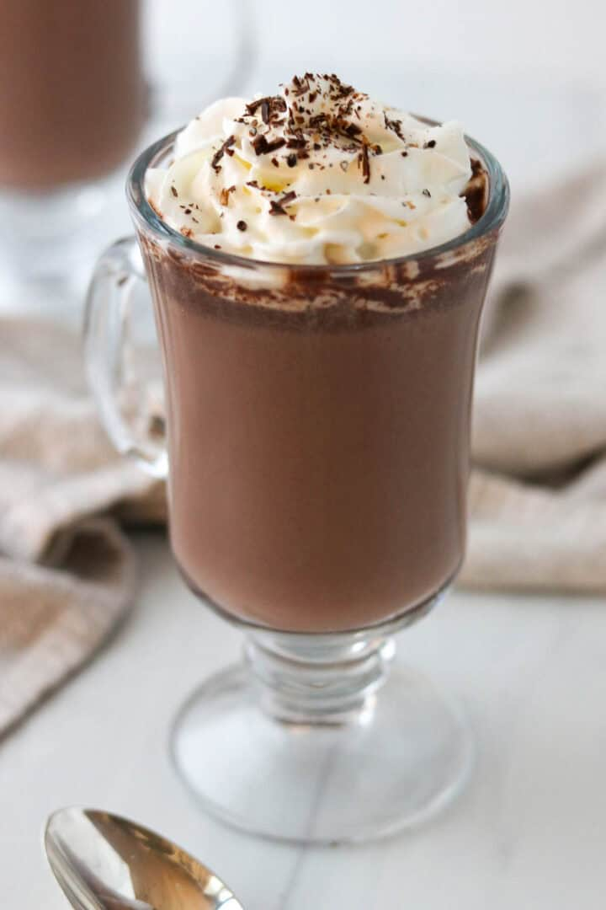

Cardamom Hot Chocolate
Cardamom Hot Chocolate is the soul-warming, cozy sipper you've been looking for. Rich, chocolatey with background notes of fragrant cardamom, this winter drink is hygge in a mug. Whether you're curled up with a good book or watching the snow fall outside, this luscious treat is sure to become a new cold-weather favorite!

Ingredients:
- Milk
- Whole Cardamom Pods or Seeds
- Unsweetened Cocoa Powder
- Granulated Sugar
- Salt
- Semi-Sweet Chocolate Chips or Chopped Semi-Sweet Chocolate
- Vanilla Extract
Instructions:
- Step 1: Combine milk and crushed cardamom pods/seeds in a medium saucepan. Heat until just steaming. Let steep for 10-15 minutes. Strain the milk into a container and return it to the saucepan. Discard pods/seeds.
- Step 2: Add the cocoa powder, sugar and salt to the milk. Heat over medium low until warm.
- Step 3: Add the chopped chocolate, whisking frequently. Add the vanilla extract.
- Step 4: Remove from the heat and serve immediately, topped with whipped cream, marshmallows, chocolate shavings and/or additional cardamom.